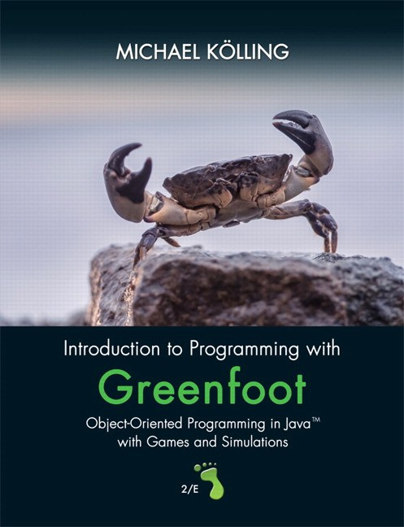

James Madison University, Spring 2018 Semester
Lab20: Game design with Greenfoot

Background
Greenfoot is an interactive, visual programming environment that enables students to write their own simulations and games using standard Java. Read the  About Greenfoot page for more details about the project.
About Greenfoot page for more details about the project.
Objectives
Become familiar with the Greenfoot environment.
Explain the difference between classes and objects.
Practice writing and calling non-static methods.
Instructions
Work through the official  Greenfoot Tutorials. At a minimum, complete parts 1–4. Feel free to explore and add other code to your scenario. Be creative! Submit your final Crab.java file via Canvas by the end of the day.
Greenfoot Tutorials. At a minimum, complete parts 1–4. Feel free to explore and add other code to your scenario. Be creative! Submit your final Crab.java file via Canvas by the end of the day.
-
Don't forget to write a Javadoc comment for the Crab class, including your name and today's date.
-
On the Linux lab machines, the tutorial files and other sample scenarios are available under
/usr/share/doc/Greenfoot. -
You can download additional scenarios (just for fun) on the book section of their website.
We will use Greenfoot during the last two weeks of CS 149 to explore classes and objects in more detail.